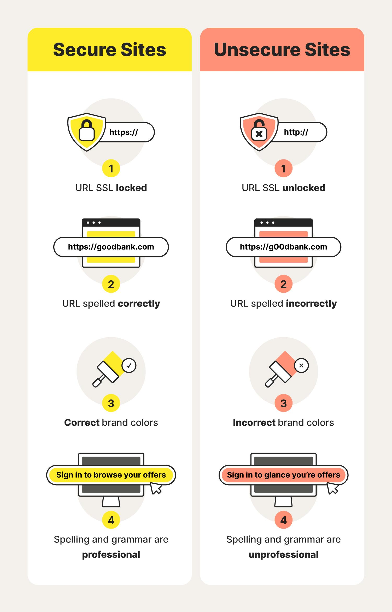

A fake website is a fraudulent website designed to appear legitimate. Cybercriminals create these websites to steal sensitive information such as usernames, passwords, banking details, and personal information.
These websites often imitate the design and logos of trusted organizations to trick users into believing they are genuine.

Legitimate Website:
amazon.com
Fake Website:
amaz0n-login-security.com
Notice the differences:
Always check website addresses carefully before entering any information.
"A fake website may appear genuine at first glance. Always verify before you trust."